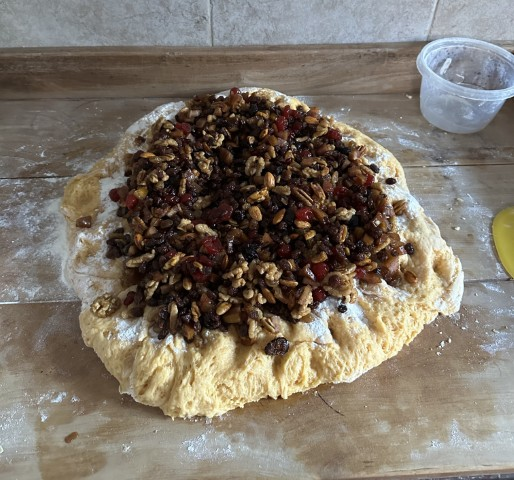

Classic Panettone
A classic Christmas special, this recipe comes from a baking and
confectionery shop that opened in 1924. My mom has a thousands tweaks
for it, but this is the most presentable form of the recipe..

Ingredients
Panettone Dough
- 1 kg all-purpose flour
- 80 grams fresh yeast
- 1 teaspoon malt extract
- 1 teaspoon salt
- 300 grams sugar
- 300 grams unsalted butter
- 4 eggs
- 4 egg yolks
- 1/3 cup warm milk
- 1/2 cup cognac
- 7 drops Azahar or panettone essence
- 1 teaspoon kirsch essence
- 1 teaspoon vanilla extract
-
1 kg dried fruit and nuts:
- 250 grams seedless raisins
- 250 grams candied fruit
- 250 grams walnuts
- 100 grams cashews
- 100 grams chopped almonds
Topping
- 1 egg white
- Approximately 1 cup powdered sugar
Procedure
-
Prepare the Fruits: The night before, chop the dried
fruits and nuts. Pour cognac over them, stir, and let them rest
overnight.
-
Activate the Yeast: Dissolve the yeast and malt
extract in warm water, add some flour to form a loose dough, cover,
and let it rise.
-
Make the Cream Mixture: Beat the butter and sugar,
then add eggs, yolks, and all essences.
-
Combine Ingredients: Place flour on a surface in a
ring, add the butter mixture and risen yeast dough in the center, and
mix until smooth. Add warm milk and knead for 20 minutes.
-
First Rise: Place dough in a bowl, cover, and let it
rise in a warm spot until doubled (about 2-3 hours).
-
Second Kneading: Flatten the dough, add soaked
fruits, and knead for 10 more minutes.
-
Form and Proof: Divide into 3 parts, place each in a
panettone mold, and let rise for 4-5 hours until near the top of the
mold.
-
Bake: Preheat oven. Make a cross cut on top and bake
for 30 minutes at a low temperature, then increase slightly and bake
until done (total ~1 hour).
-
Prepare Topping: Mix egg white with powdered sugar
until thick. Spread on cooled panettone.
-
Optional Syrup: Make a simple syrup (sugar and
water), cut incisions on top, and pour if desired.